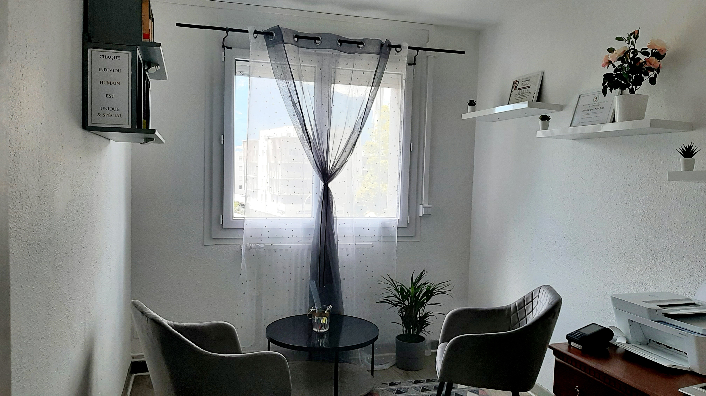

L’organisation matérielle et l’orientation humaine du cabinet ajoutées au professionnalisme de l’équipe, offrent un cadre clinique propice à la libération d’une parole que le/la patient(e) arrivait difficilement à exprimer ailleurs ou dans la solitude.

Notre approche
Nous nous inscrivant dans une approche clinique intégrative principalement inspirée des thérapies cognitives et comportementales, mais pas que, nos prises en charge s’adaptent à la singularité de la patiente ou du patient et dans le respect de sa temporalité. Dans une démarche axée sur l’amélioration de la qualité de vie (réduction des symptômes positifs problématiques, engagement dans une démarche thérapeutique…), nos suivis comprennent en général 3 à 10 séances, selon le projet thérapeutique élaboré à la première rencontre, l’évolution du comportement-problème et la volonté du patient. Conformément aux règles déontologiques et les bonnes pratiques régissant la profession, nos psychologues participent régulièrement à des formations continues, se font supervisés et sont membres de communautés savantes et de pairs en psychologie, telle que la Société Française de Psychologie, la Société Française de Psychologie Légale entre autres.
Consultation
Comme la santé physique ou somatique, la santé mentale joue un rôle crucial pour le bien-être de chaque personne humaine. Quel que soit votre sexe ou votre âge, consulter un psychologue peut être un choix judicieux dans une situation simple, comme la préparation d’un concours qui vous stresse ou des situations plus évoluées comme une coupure des interactions sociales et une perte d’intérêt pour les activités quotidiennes. Nous vous accueillons dans notre espace clinique, sur rendez-vous, pour toute consultation en individuelle. Exceptionnellement et lorsque la convenance clinique le permet, deux personnes peuvent être reçues en entretien.
Prise en charge psychocriminologique et victimologique : une spécificité
Étant l’un des rares Cabinets de Psychologie en Isère ayant de psychologues cliniciens spécialisés en criminologie, psychocriminologie et victimologie, notre cabinet offre une gamme de services dans l’évaluation et l’intervention criminologique et victimologique destinée aux particuliers et aux institutions. Il peut s’agir de prendre en charge une personne victime d’infraction (violences physiques, sexuelles qu’elles proviennent dans l’environnement conjugal ou pas…), une ou plusieurs personnes à la suite d’un événement potentiellement traumatique (viol, maltraitance, attentat), l’évaluation ou l’accompagnement d’une PPSMJ. Nous intervenons dans le cadre d’une enquête ou d’une instruction pénale (profilage, autopsie psychologique) en lien avec les autorités policières ou judiciaires, mais aussi dans le cadre d’une mesure éducative en lien avec la PJJ ou de placement en lien avec le Juge des enfants ou l’autorité départementale. La consultation peut être faite à l’initiative de la personne victime, qu’elle souhaite entamer des démarches judiciaires ou pas, ou à la demande d’une association d’aide aux personnes victimes ou d’un tribunal, ou d’un dispositif d’Aide Sociale à l’Enfance, de la Protection Judiciaire de la Jeunesse entre autres.
Justice restaurative et visite médiatisée
Compte tenu du rôle de plus en plus prégnant de la justice restaurative (JR) dans différents systèmes judiciaires à travers le monde, notre Cabinet entend participer à l’offre en matière d’accompagnement à la justice restaurative à l’échelle nationale. Complémentaire au procès pénal classique dans lequel très peu de place était accordée à la victime et où le répressif prenait le devant de la scène au détriment de la compréhension et la restauration du lien intersubjectif brisé, les rencontres de JR sont organisées à la demande des acteurs (judiciaires, sociaux, les individus eux-mêmes) et à l’exception des cas de violences conjugales ou encore de viol dans lesquels une rencontre auteur-victime peut être une occasion de reviviscence traumatique pour la personne victime. La plupart du temps et notamment dans l’aide sociale à l’enfance (ASE), l’un des parents ou les deux peuvent avoir des difficultés à être structurants pour leur enfant et le service territorial (départemental) peut parfois être pris à défaut (accusation d’être impartial), une rencontre dans un endroit extérieur et avec des professionnels compétents (ayant de l’expérience dans l’Aide sociale à l’Enfance) peut être d’une grande importance. Notre service de médiation peut-être aussi sollicité quand deux membres d’une famille (parent-parent, parent-enfant) n’arrivent plus à avoir une communication positive entre eux. L’idée c’est d’accompagnement les personnes dans cette période de crise ou de conflit, en accentuant sur la nécessité de préserver les plus jeunes (enfants) des conflits parentaux.
Groupe d’analyse de la pratique (GAP) et prestation en libéral aux institutions
En institution et notamment dans les services où une approche pluridisciplinaire est nécessaire (social, socio-éducatif, le socio-judiciaire), un temps d’échange et d’analyse de la pratique animé par un professionnel extérieur à l’entreprise est très souvent recommandée. Soit sous la forme d’étude de situations, un temps d’échange mensuel ou trimestriel ou un Groupe d’Analyse de la Pratique, les professionnels de notre cabinet se déplacent sur le terrain pour accompagner les institutions dans cette démarche. Il s’agit d’offrir un temps aux professionnels leur permettant de sortir de la routine, de retirer la « tête dans le guidon », prendre de la hauteur, parler des difficultés sans se sentir jugés par un ou une collègue (querelle de chapelle, sentiment d’être évalué et non d’être supporté par l’autre…), mais aussi un temps d’étayage et d’éclairage clinique par rapport à certaines situations. Ces prestations sont directement bénéfiques pour les professionnels, mais indirectement, l’institution ainsi que les bénéficiaires, bénéficient de la qualité de vie au travail et de l’efficacité des salariés.
Votre demande de Rendez-vous a été envoyé avec succès. Nous reviendrons vers vous par mail rapidement!